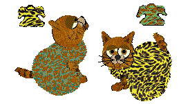
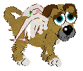
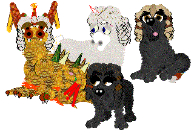

Hex edited Clothes for Petz 3
~~~~~~~~~~~~~~~~~~~~~~~~~~~~~
These are the very few clothes that I've made for the Petz 3 game. I don't
have a great interest in making petz clothes, mainly because there have
always been a lot of people out there making great stuff pretty much since
the game first came out. But there were a couple of things that people
wanted to know how to do, and here they are.

Two Dance Dresses in one

Wingz for your petz

Wigz for your petz / Dreadlocks 2 / Judge's
wigz